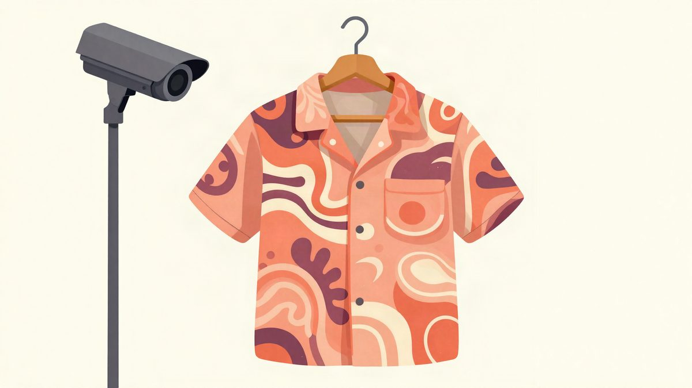
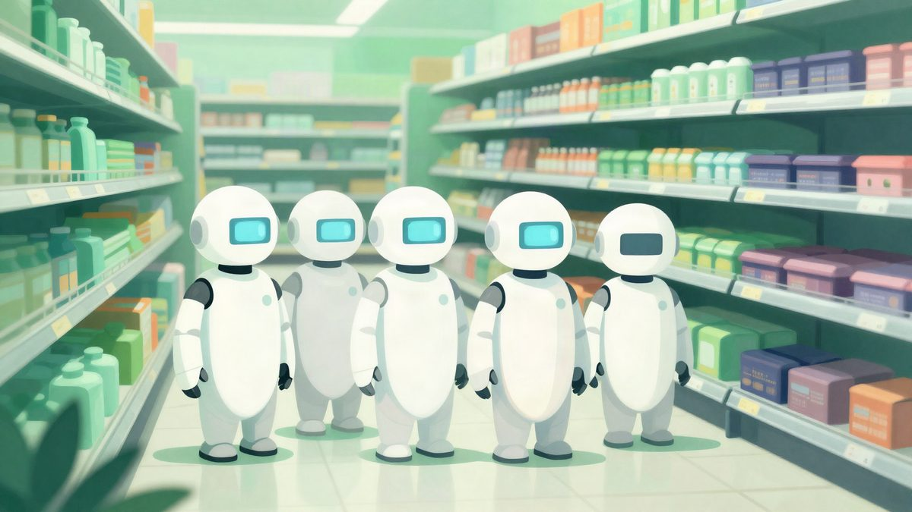

Digital Camouflage: košulja koju AI kamere za nadzor ne vide kao čovjeka

Umjetnik Simon Weckert predstavio je košulju Digital Camouflage s uzorkom koji AI sustavi za prepoznavanje osoba ne registriraju kao čovjeka. Uzorak je nastao postupkom "adversarial loop", u kojem se kandidat za uzorak testira na detektoru i prilagođava dok pouzdanost detekcije ne padne. Cijena i dostupnost košulje u Europi nisu poznate.
Simon Weckert predstavio je košulju Digital Camouflage, koja na prvi pogled izgleda kao ružna havajska majica. Njezin naizgled apstraktan uzorak osmišljen je da AI kamere za nadzor ne prepoznaju nositelja kao osobu.
Weckert objašnjava da AI sustavi nikad nisu naučili što je čovjek. Naučili su kako ljudi statistički izgledaju na milijunima slika za treniranje. U ranim slojevima mreže to su rubovi, kontrasti i teksturni gradijenti, a dublje obrasci dijelova tijela, poput silueta glave i ramena, proporcija udova prema torzu i kontinuiteta obrisa tijela naspram pozadine. Za stroj je "osoba" skup vizualnih statistika, a upravo je to njegova slabost, tvrdi autor.
Uzorak nastao uz pomoć AI-a
Uzorak je ipak izrađen pomoću AI-a, postupkom koji se zove "adversarial loop". Weckert je za Dezeen opisao tijek: generira se kandidat za uzorak, pokaže ga se detektoru i izmjeri koliko sigurno on još pronalazi osobu. Zatim se uzorak prilagodi, a sve se ponavlja dok pouzdanost detekcije ne padne.
Takav pristup bio je potreban jer su slabosti stroja ljudima neintuitivne. Strojnu percepciju ne može se nadmudriti dizajnom od oka, a što stroj ne vidi, može pokazati samo stroj. Weckert to opisuje kao simetriju: ista vrsta AI-a koja nadzire trg naučila je košulju kako se sakriti.
Vidljivo ljudima, nevidljivo strojevima
Šarene, gotovo hipnotične boje uzorka čine da se nositelj među ljudima ističe. AI sustavi koje je Weckert testirao uzorak uopće ne registriraju kao osobu.
Izvor: Oddity Central
Povezani članci

AGIBOT je u Shanghaiju 24 sata testirao šest humanoidnih robota u trgovini, a dvojica nisu izdržala6. studenoga 2026. Block je predstavio Dessu, govorni model treniran isključivo na ljudskom govoru23. listopada 2026.
Block je predstavio Dessu, govorni model treniran isključivo na ljudskom govoru23. listopada 2026. Allye iz starih baterija električnih auta gradi punjač od 400 kW koji ne zahtijeva nadogradnju mreže9. studenoga 2026.
Allye iz starih baterija električnih auta gradi punjač od 400 kW koji ne zahtijeva nadogradnju mreže9. studenoga 2026.